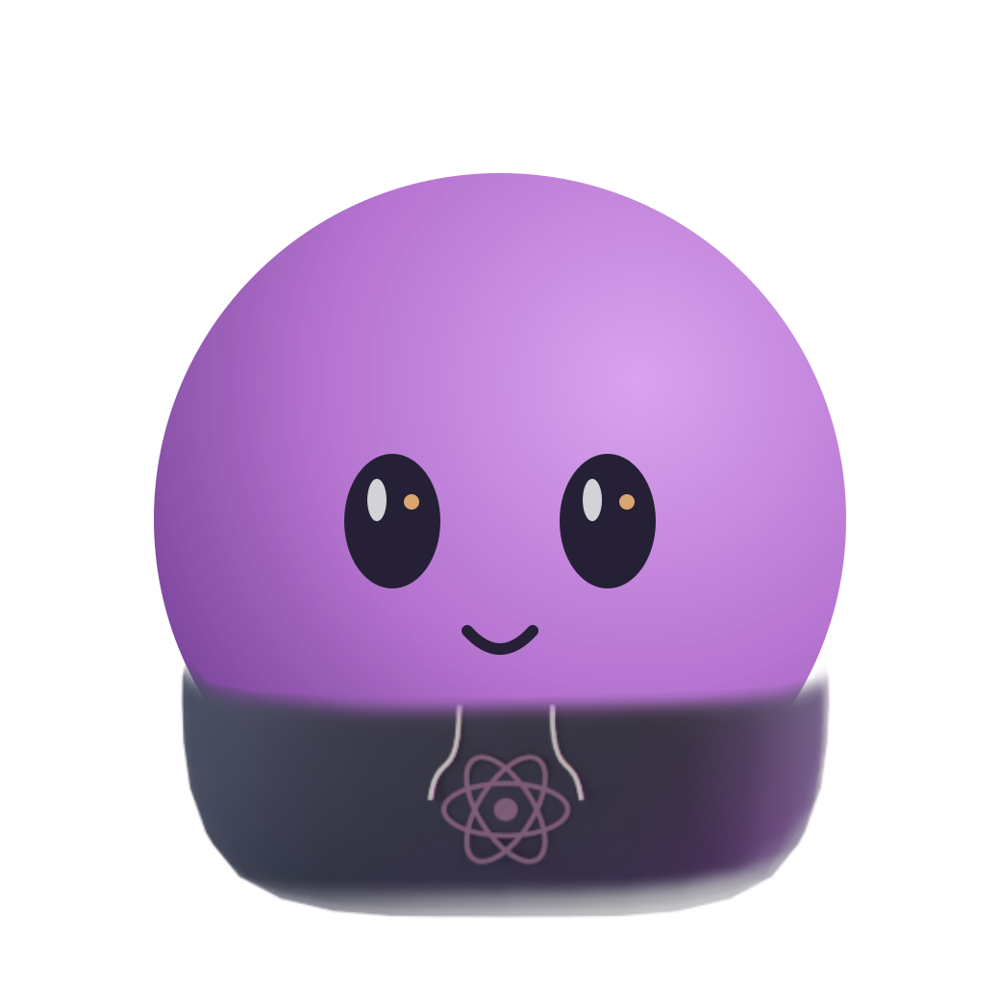

Сочетания с текущими аксессуарами
Остальные вещи ещё старые. Шлем перекрывает одежду и наушники, поскольку рисуется поверх них. Предложение: отдельный цельный космический образ с сохранением прежнего выбора для возврата. Правило пока не внедрено.
До перерисовки
